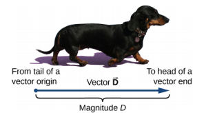
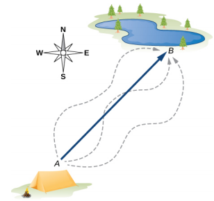
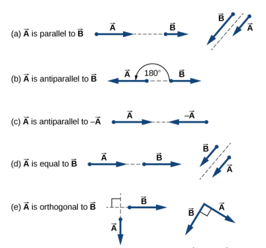
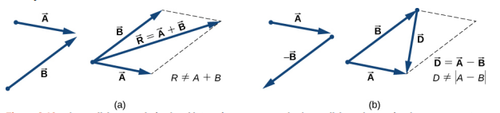
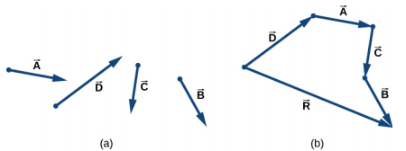
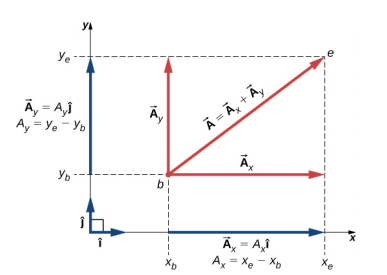
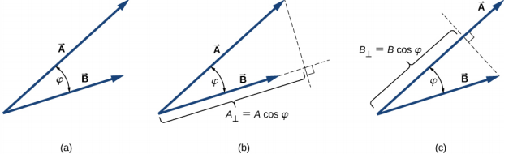
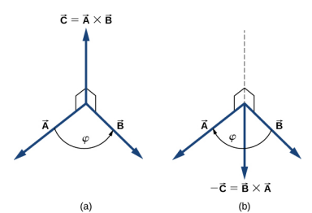
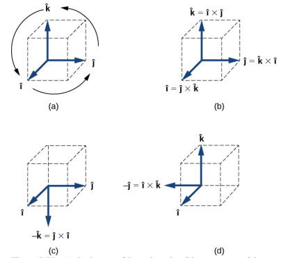

Vectors are essential to physics and engineering. Many fundamental physical quantities are vectors, including displacement, velocity, force, and electric and magnetic vector fields. Scalar products of vectors define other fundamental scalar physical quantities, such as energy. Vector products of vectors define still other fundamental vector physical quantities, such as torque and angular momentum. In other words, vectors are a component part of physics in much the same way as sentences are a component part of literature.
Many physical quantities can be specified completely by giving a single number and the appropriate unit. For example, “a class period lasts 50 min” or “the gas tank in my car holds 65 L” or “the distance between two posts is 100 m.” A physical quantity that can be specified completely in this manner is called a scalar quantity. Scalar is a synonym of “number.” Time, mass, distance, length, volume, temperature, and energy are examples of scalar quantities.
Some other physical quantities, however, cannot be described completely by just a single number of physical units - they may need a direction attached to the scalar to give it the full meaning. Physical quantities specified completely by giving a number of units (magnitude) and a direction are called vector quantities.

We draw a vector from the initial point or origin (called the tail) to the end or terminal point (called the head), marked by an arrowhead. Magnitude is the length of a vector and is always a positive scalar quantity.
To see how vectors work, let’s take a simple displacement vector shown in the figure below.

The displacement vector from point A to point B is indicated by an arrow with origin at point A and end at point B. The displacement is the same for any of the actual paths (dashed curves) that may be taken between points A and B.
Two vectors that have identical directions are said to be parallel vectors—meaning, they are parallel to each other. Two parallel vectors A⃗ and B⃗ are equal, denoted by A⃗ = B⃗, if and only if they have equal magnitudes A⃗ = B⃗. Two vectors with directions perpendicular to each other are said to be orthogonal/perpendicular vectors.

In a vector equation, both sides of the equation are vectors. In general, when a vector A⃗ is multiplied by a positive scalar α, the result is a new vector B⃗ that is parallel to A⃗. The magnitude the new vector(B⃗) is obtained by multiplying the magnitude of the original vector(A⃗) with the scalar.
B⃗ = αA⃗ & |B⃗| = |α||A⃗|
Based on the scalar we multiply the original vector with, we can change the following aspects of the vector
if |α| > 1, the magnitude of the new vector will be larger
if |α| > 1, the magnitude of the new vector will be smaller
if α > 0, the new vector will be parallel to the original vector
if α < 0, the new vector will be anti-parallel to the original vector
Most of the applications of vectors lies in operations on vectors. One significant operation is addition of vectors. The sum of vectors is called the resultant.
R⃗ = A⃗ + B⃗
For vectors that act along one dimension, it is as simple as adding/subtracting their magnitudes depending on whether they are parallel or anti-parallel.
When adding many vectors in one dimension, it is convenient to use the concept of a unit vector. A unit vector, which is denoted by a letter symbol with a hat, such as v̂, has a magnitude of one and does not have any physical unit. The only role of a unit vector is to specify direction.
$$\hat{v}=\dfrac{\vec{v}}{|\vec{v}|}$$
Vector addition has a few of these properties:
Commutativity A⃗ + B⃗ = B⃗ + A⃗
Associativity (A⃗ + B⃗) + C⃗ = A⃗ + (B⃗ + C⃗)
Distributive over scalars α1A⃗ + α2A⃗ = (α1 + α2)A⃗
However, when dealing with multi-dimensional(two & more), we have to have a bit more complicated process to come up at out resultant. One simple way of adding these vectors is using a graphical addition method. The two common ones are the parallelogram method and the more popular, triangle method.
Make the parallel translation of each vector to a point where their origins (marked by the dot) coincide and construct a parallelogram with two sides on the vectors and the other two sides (indicated by dashed lines) parallel to the vectors.

A⃗ + B⃗ Draw the resultant vector R⃗ along the diagonal of the parallelogram from the common point to the opposite corner. Length R of the resultant vector is not equal to the sum of the magnitudes of the two vectors.
A⃗ − B⃗ Draw the difference vector D⃗ along the diagonal connecting the ends of the vectors. Place the origin of vector D⃗ at the end of vector B⃗ and the end of vector D⃗ at the end of vector A⃗. Length D of the difference vector is not equal to the difference of magnitudes of the two vectors.
Suppose we want to draw the resultant vector of the four vectors shown below. We select any one of the vectors as the first vector and make a parallel translation of a second vector to a position where the tail of the second vector coincides with the head of the first vector. Then, we select a third vector and make a parallel translation of the third vector to a position where the tail of the third vector coincides with the head of the second vector. We repeat this procedure until all the vectors are in a head-to-tail arrangement as shown below.

The resultant vector is drawn from the tail of the first vector to the head of the last vector in this arrangement.
For daily applications and numerical implementations of vectors, graphical addition doesn’t seem to be atop of the options. We would rather use actual defined algebraic representation of vectors which can be implemented through coordinate systems.
For a simple two dimensional vector, the vector is described by a pair of its vector coordinates. Consider the vector below on the Cartesian plane.

Following the parallelogram rule for vector addition, each vector on a Cartesian plane can be expressed as the vector sum of its vector components
A⃗ = A⃗x + A⃗y
We usually denote the positive direction on the x-axis by the unit vector î and the positive direction on the y-axis by the unit vector ĵ. Unit vectors of the axes, î and ĵ, define two orthogonal directions in the plane. The x- and y- components of a vector can now be written in terms of the unit vectors of the axes:
$$\begin{cases} \vec{A}_{x} = A_{x} \hat{i} \\ \vec{A}_{y} = A_{y} \hat{j} \end{cases}$$
For a three dimensional version,
$$\begin{cases} \vec{A}_{x} = A_{x} \hat{i} \\ \vec{A}_{y} = A_{y} \hat{j} \\ \vec{A}_{z} = A_{z} \hat{k} \end{cases}$$
Thus, the vector can be expressed as
A⃗ = Axî + Ayĵ
For a three dimensional version,
A⃗ = Axî + Ayĵ + Azk̂
The generalization of the number zero to vector algebra is called the null vector, denoted by $\vec{0}$. All components of the null vector are zero, $\vec{0}=0\hat{i}+0\hat{j}+0\hat{k}$, so the null vector has no length and no direction.
Based off of the definition above, two vectors A⃗ and B⃗ are equal vectors if and only if their difference is the null vector.
$$\vec{0}=\vec{A}-\vec{B}=(A_x-B_x)\hat{i}+(A-y-B_y)\hat{j}+(A_z-B_z)\hat{k}=\vec{0}=0\hat{i}+0\hat{j}+0\hat{k}$$
$$\vec{A} = \vec{B} \Leftrightarrow \begin{cases} A_{x} = B_{x} \\ A_{y} = B_{y} \\ A_{z} = B_{z} \end{cases}$$
Hence, we can write A⃗ = B⃗ if and only if the corresponding components of vectors A⃗ and B⃗ are equal.
A vector can be multiplied by another vector and there are two kinds of products of vectors used broadly in physics and engineering. One kind of multiplication is a scalar multiplication of two vectors. Taking a scalar product of two vectors results in a number (a scalar), as its name indicates. Scalar products are used to define work and energy relations. For example, the work that a force (a vector) performs on an object while causing its displacement (a vector) is defined as a scalar product of the force vector with the displacement vector.
A quite different kind of multiplication is a vector multiplication of vectors. Taking a vector product of two vectors returns as a result a vector, as its name suggests. Vector products are used to define other derived vector quantities. For example, in describing rotations, a vector quantity, torque is defined as a vector product of an applied force (a vector) and its lever arm (a vector).

The scalar product A⃗ ⋅ B⃗ of two vectors A⃗ and B⃗ is a number defined by the equation
A⃗ · B⃗ = ABcos θ
Where θ is the angle between the two vectors.
In the Cartesian coordinate system, scalar products of the unit vector of an axis with other unit vectors of axes always vanish because these unit vectors are orthogonal.
î · ĵ = |î||ĵ|cos 90o = (1)(1)(0) = 0,
î · k̂ = |î||k̂|cos 90o = (1)(1)(0) = 0,
k̂· ĵ = |k̂||ĵ|cos 90o = (1)(1)(0) = 0
Since the magnitude of all the unit vectors is 1, we also get
î · î = i2 = ĵ · ĵ = j2 = k̂ · k̂ = 1
As with the definition, we can portray the scalar product as the projection of the first vector over the other.
$$\begin{cases} \vec{A}\; \cdotp \vec{B} = AB \cos \theta \\ \vec{A}\; \cdotp \vec{B} = B(A \cos \theta) = BA_{\parallel} \\ \vec{A}\; \cdotp \vec{B} = A(B \cos \theta) = AB_{\parallel} \ldotp \end{cases}$$
For example, in the Cartesian coordinate system in a plane, the scalar x-component of a vector is its dot product with the unit vector î, and the scalar y-component of a vector is its dot product with the unit vector ĵ:
$$\begin{cases} \vec{A}\; \cdotp\; \hat{i} = |\vec{A}||\hat{i}| \cos \theta_{A} = A \cos \theta_{A} = A \cos \theta_{A} = A_{x} \\ \vec{A}\; \cdotp\; \hat{j} = |\vec{A}||\hat{j}| \cos (90^{o} - \theta_{A}) = A \sin \theta_{A} = A_{y} \end{cases}$$
To compute the scalar product of two vectors when they’re in their component forms, we can do this. Consider two vectors shown below
A⃗ = Ax î + Ay ĵ + Az k̂ and B⃗ = Bx î + By ĵ + Bz k̂,
The scalar product is defined as
$$\begin{cases} \vec{A}\; \cdotp \vec{B} = (A_{x}\; \hat{i} + A_{y}\; \hat{j} + A_{z}\; \hat{k})\; \cdotp (B_{x}\; \hat{i} + B_{y}\; \hat{j} + B_{z}\; \hat{k}) \\ = A_{x}B_{x}\; \hat{i}\; \cdotp\; \hat{i} + A_{x}B_{y}\; \hat{i}\; \cdotp\; \hat{j} + A_{x}B_{z}\; \hat{i}\; \cdotp\; \hat{k} \\ + A_{y}B_{x}\; \hat{j} \cdotp\; \hat{i} + A_{y}B_{y}\; \hat{j}\; \cdotp\; \hat{j} + A_{y}B_{z}\; \hat{j} \cdotp\; \hat{k} \\ + A_{z}B_{x}\; \hat{k}\; \cdotp\; \hat{i} + A_{z}B_{y}\; \hat{k}\; \cdotp\; \hat{j} + A_{z}B_{z}\; \hat{k}\; \cdotp\; \hat{k} \ldotp \end{cases}$$
The above product simplifies to the answer below
A⃗ · B⃗ = AxBx + AyBy + AzBz

The vector product of two vectors A⃗ and B⃗ is denoted by A⃗ × B⃗ and is often referred to as a cross product. The vector product is a vector that has its direction perpendicular to both vectors A⃗ and B⃗. In other words, vector A⃗ × B⃗ is perpendicular to the plane that contains vectors A⃗ and B⃗. The magnitude of the vector product is defined as
|A⃗ × B⃗| = ABsin θ
In another way, we can define the vector A⃗ × B⃗ as follows
A⃗ × B⃗ = ABsin θn̂
Where n̂ is a unit vector perpendicular to the plane that contains vectors A⃗ and B⃗.
Unlike scalar product, the vector product is not commutative. In fact, it is anti-commutative:
A⃗ × B⃗ = − B⃗ × A⃗
Similar to the dot product, the cross product has the following distributive property:
A⃗ × (B⃗ + C⃗) = A⃗ × B⃗ + A⃗ × C⃗
As we did with the scalar product, let’s do the vector product with the component form of vectors. The most visible one is
î × î = ĵ × ĵ = k̂ × k̂ = 0
However, for the unit vectors that are perpendicular, we have to use a little more thinking. Imagine, for example, we are trying to find the vector product of ĵ and k̂. We know that the vector product is perpendicular to the plane containing both vectors meaning it’s on the x-axis. So, it is either î or -î. Conventionally, we use a cyclic order:

Consider two vectors shown below
A⃗ = Ax î + Ay ĵ + Az k̂ and B⃗ = Bx î + By ĵ + Bz k̂,
The vector product is defined as
$$\begin{cases} \vec{A} \times \vec{B} = (A_{x}\; \hat{i} + A_{y}\; \hat{j} + A_{z}\; \hat{k}) \times (B_{x}\; \hat{i} + B_{y}\; \hat{j} + B_{z}\; \hat{k}) \\ = A_{x}\; \hat{i} \times (B_{x}\; \hat{i} + B_{y}\; \hat{j} + B_{z}\; \hat{k}) + A_{y}\; \hat{j} \times (B_{x}\; \hat{i} + B_{y}\; \hat{j} + B_{z}\; \hat{k}) + A_{z}\; \hat{k} \times (B_{x}\; \hat{i} + B_{y}\; \hat{j} + B_{z}\; \hat{k}) \\ = A_{x}B_{x}\; \hat{i} \times \hat{i} + A_{x}B_{y}\; \hat{i} \times \hat{j} + A_{z}B_{z}\; \hat{i} \times \hat{k} \\ + A_{y}B_{x}\; \hat{j} \times \hat{i} + A_{y}B_{y}\; \hat{j} \times \hat{j} + A_{y}B_{z}\; \hat{j} \times \hat{k} \\ + A_{z}B_{x}\; \hat{k} \times \hat{i} + A_{z}B_{y}\; \hat{k} \times \hat{j} + A_{z}B_{z}\; \hat{k} \times \hat{k} \\ = A_{x}B_{x}(0) + A_{x}B_{y}(+\hat{k}) + A_{x}B_{z}(-\hat{j}) \\ + A_{y}B_{x}(-\hat{k}) + A_{y}B_{y}(0) + A_{y}B_{z}(+\hat{i}) \\ + A_{z}B_{x}(+\hat{j}) + A_{z}B_{y}(- \hat{i}) + A_{z}B_{z}(0) \end{cases}$$
Which simplifies to
C⃗ = A⃗ × B⃗ = (AyBz − AzBy) î + (AzBx − AxBz) ĵ + (AxBy − AyBx) k̂